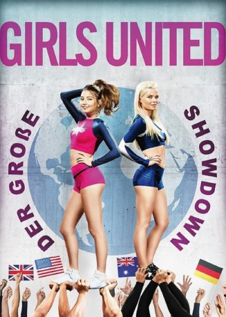

#7346 Girls United - Der grosse Showdown
 
 IMDB-Wertung: 4.2 / 10
IMDB-Wertung: 4.2 / 10  Metascore: 0
Metascore: 0 
Destiny (Cristine Prosperi) ist der Kapitän des Cheerledering-Teams namens "The Rebels". Die dreifachen Sieger der nationalen Meisterschaften werden von "The Truth" zu einem globalen Wettkampf herausgefordert. Die neue Mannschaft ist hochkarätig besetzt und durchaus ein würdiger Gegner. Die Rebels nehmen die Herausforderung an und treten in der virtuellen Online-Challenge – moderiert von Cheer Goddess (Vivica A. Fox) – gegen Cheerleader aus der ganzen Welt an. Die anderen Teams scheinen sich allesamt gegen Destiny und Co. verschworen zu haben, doch die Truppe gibt nicht auf. Die Rebels-Anführerin muss herausfinden, auf wen sie zählen kann und ihr egoistisches Verhalten zum Wohle der Mannschaft hintenanstellen, wenn sie eine Chance auf die Trophäe wollen
Jahr: 2017
Dauer: 95 Minuten
FSK:
Land: USA Studio: UPHETonspuren: DTS - ,
Untertitel: Deutsch,
Auflösung: 1080p (1920x1080) Größe: 6338 MB
Genre: Komödie, Liebe, Sport
Regisseur: Robert Adetuyi
Drehbuch: Alyson Fouse
Soundtrack:
Darsteller:
 Vivica A. Fox als Cheer Goddess
Vivica A. Fox als Cheer Goddess- Meghan Oberholzer als Perky Cheerleader
- Cristine Prosperi als Destiny
- Jordan Rodrigues als Blake
- Sven Ruygrok als Jeff
- Sophie Vavasseur als Hannah
- Maria Vos als Garrulous Mother
- Natalie Walsh als Roxanne
- Samantha Willoughby als The Truth Squad Dancer / Texan Titans Captain
 Jay-Jay Botha als Crowd goer , uncredited
Jay-Jay Botha als Crowd goer , uncredited- Stephan Benson als Didit
- Kai Luke Brummer als Laughing Boy Cheerleader #6
- Sophie de Bruyn als Cheerleader #1
- Joshua Daniel Eady als Boy Cheerleader #1
- Cowboy Elliott als Garrulous Child
- Shayne Hickman als Cheerleader #2
- Byron Langley als Boy Cheerleader #5
- Sam Marais als Boy Cheerleader #7
- Kiroshan Naidoo als Latin Boy Cheerleader #4
- Gia Lodge-O'Meally als Willow
- Douglas Swinerd als Boy Cheerleader #3
- Michael William Wallace als Boy Cheerleader #2
- Joshua Eady als Boy Cheerleader 1
- Carolina Nisser als Cheerleader
Datei: X:\2017(G-M)\Girls United - Der grosse Showdown (2017, FSK, 1920x1080).mkv seit 18.10.2017
Festplatte: HD 2017(A-Z)-2018(A-F)
 Es gibt insgesamt 148 Filme in der Gruppe '2017(G-M)'
Es gibt insgesamt 148 Filme in der Gruppe '2017(G-M)'